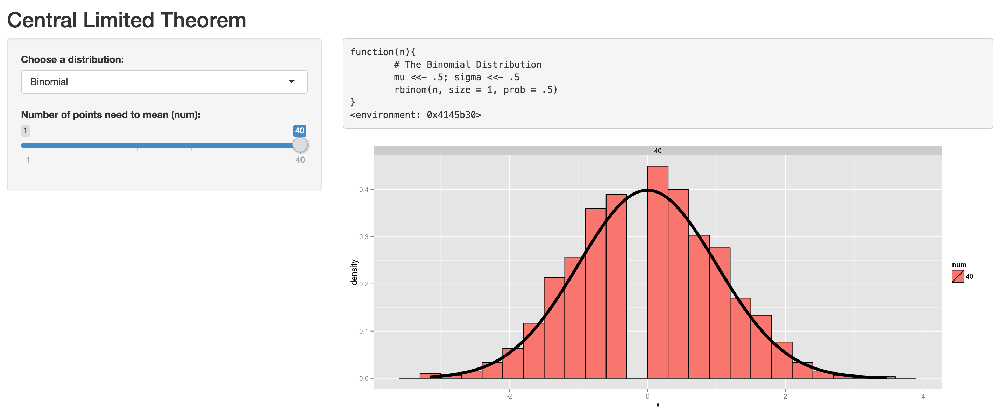

This shiny app investigate the Central Limited Theorem. The central limit theorem (CLT) states that, given certain conditions, the arithmetic mean of a sufficiently large number of iterates of independent random variables, each with a well-defined expected value and well-defined variance, will be approximately normally distributed, regardless of the underlying distribution
So we investigate some distribution and see how the CLT works, distribution contains Binomial, Exponential, F, Logistic, Poisson, Student T, Uniform distribution.
We create 1000 mean datas from specific distribution and see its normalized distribution in hist, we also plot a normal distribution curve to see how they are similar, when num = 1, this means we create 1000 random data from that distribution, when num = 40, this means we create 1000 random data mean of 40 data from that distribution.
My Shiny App
Investigate Central Limited Theorem
Ada Lee
Investigate Central Limited Theorem
Binomial Distribution Example
binom <- function(n){ rbinom(n, size = 1, prob = .5) } # The Binomial Distribution

How to use the shiny app
From Binomial example, we can see that Binomial Distribution does not violate Central Limited Theorem. You can explore other distributions on the shiny app
First choose distribution, for example "Binomial", and choose num = 1, this will see the original distribution of "Binomial" distribution

How to use the shiny app
- Second choose distribution, for example "Binomial", and choose num = 40, this will see the 40 mean distribution of "Binomial" distribution, we can see that this fit the nominal curve very well.

- You can try other distributions by yourself here. Since the program runs for a few seconds, so you may need patient to wait for a few seconds.